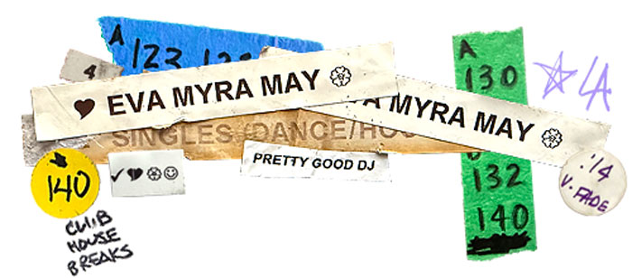
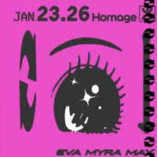
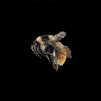
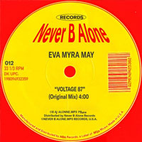
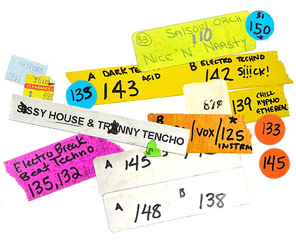

Eva Myra May ( l o c a l D J )

intersex artist, producer, and designer based in Los Angeles. currently developing a sound rooted in alternative productions, queer diy sub-cultures, and gender euphoria. her sets are multi-format from vinyl to improvised live hardware, while each performance a cohesive attempt at channeling raw emotional reflections of identity, vice, and virtue through the transformative energy of dance floors and community third spaces. More specifically, she plays and makes s*ssy house & tr*nny techno.
venues & collectives: Ostbahnhof // Por Detroit // Made To Move // Shelter // Organik // Sorbet // Honey's // Homage // The Echoplex // Club Tee Gee // Femme House Radio // Bean Radio // dublab // KCHUNG // Gyration Station // CLUTCH // Melt // Yeah Yeah Yas // Trans*endent // SoftBeat
Hardgroove & Techno [vinyl] 1:40:22
Por Detroit | NYE 2025 →
Progressive House & Electro [vinyl] 1:00:01
Homage | Jan 23.26 →Deep House & Breaks [vinyl] 1:04:02
Gyration Station | Mix 38 →
Feeling Down w/ Linda Lo [self release]
Listen on Soundcloud →Deep In You [self release]
Listen on Soundcloud →Oh Yes (Eva Myra May Remix) [no bias]
Listen on Apple Music →
Voltage 87 [never b alone]
Listen on Apple Music →curration and archived sets from local DJs at EVAMM Radio. formed in 2022, EVAMM is a queer music collective and alternative third place to connect over the music.
Eva Myra May ( l o c a l D J )
